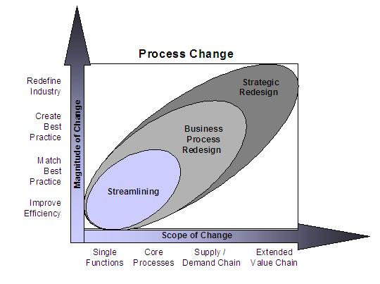

| Guideline: Developing Process Assessment Analysis |
 |
|
| Related Elements |
|---|
The most productive approach to developing this work product is a series of facilitated client interviews and workshops
because consensus is required. Before starting this work product, ensure that the scope has been defined and gather any
Static or Dynamic process maps and/or existing process matricies documentation.
The Process Change Change programs vary in scope, intensity, and ambition. The Process Change illustrates how, as the scope and magnitude of change increases, it is much more likely to have an impact on an organization’s results and deliver more value. The horizontal axis represents increasing the scope of change, and the vertical axis represents increasing the magnitude of change.
The higher on the diagonal, the greater the positive impact on an organization’s results and the potential to deliver
value (strategic redesign). The lower section of the diagonal represents change on a much smaller scale
(streamlining).  Streamlining Streamlining is focused on improving existing processes or functions with an organization to gain greater efficiency and reduce costs. Streamlining aims at incremental improvements to individual processes. Existing processes are analyzed and evaluated step-by-step in order to eliminate no-value-added work.Business Process Redesign Business Process Redesign goes beyond departmental or functional streamlining to rethinking the way the business operates. Both the scope and magnitude of change are considerably great. BPR makes fundamental changes in the way a business operates. In its most common understanding, BPR is simply about optimizing processes. IBM views BPR as the fundamental reexamination, redesign, and implementation of a business process or processes. This process-focused thinking seeks greater value for our clients in the form of growth and holistic change. Strategic Redesign Strategic redesign represents a significant shift in the objectives of the organization: it involves rethinking why it is in business, and how it can deliver value to its customer in a way unrivaled by competitors. This approach requires a comprehensive and integrated transformation of processes, people and systems – not only for the organization itself, but also potentially for its suppliers and customer. In its most rigorous form, strategic redesign can demand an organization-wide shift in values, styles, attitudes, skills and behavior.
|
| © Copyright IBM Corp. 1987, 2012 All Rights Reserved Property of IBM These materials are intended only for use as part of an IBM engagement |